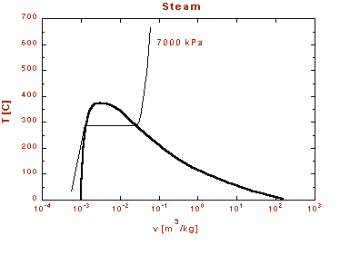
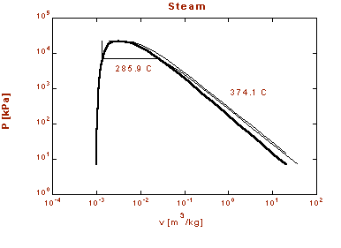

MODULE 2: PROPERTIES OF PURE SUBSTANCES
(fragments of the CD that comes with
Cengel&Boles's book "Thermodynamics", 3-d edition, McGraw-Hill,
1998)
Example 1
Find the internal energy of water at the
given states for 7 MPa and plot the states on T-v, P-v, and P-T diagrams.


1. P= 7 MPa, dry saturated or saturated
vapor
Using Table A-5,
Locate state 1 on the T-v, P-v, and P-T diagrams.
2. P = 7 MPa, wet saturated or saturated liquid
Using Table A-5,
Locate state 2 on the T-v, P-v, and P-T diagrams.
3. Moisture = 5%, P = 7 MPa
Let moisture be y defined as
then, the quality isand using Table A-5,
Notice that we could have used
Locate state 3 on the T-v, P-v, and P-T diagrams.
4. P = 7 MPa, T = 600 C
For P = 7 MPa, Table A-5 gives Tsat = 285.9 C. Since 600 C > Tsat for this pressure, the state is superheated. Use Table A-6.
Locate state 4 on the T-v, P-v, and P-T diagrams.
5. P = 7 MPa, T = 100 C
Using Table A-4, at T = 100 C, Psat = 0.10132 MPa. Since P > Psat, the state is compressed liquid.
Approximate solution:
Solution using Table A-7:
We do linear interpolation to get the value at 100ºC. (We will demonstrate how to do linear interpolation with this problem even though one could accurately estimate the answer.)
P MPa u kJ/kg
5 417.52
7 u = ?
10 416.12
The interpolation scheme is called "the ratio of corresponding differences."
Using the above table, form the following ratios.
Locate state 5 on the T-v, P-v, and P-T diagrams.
6. P = 7 MPa, T = 460ºC
Since 460ºC > Tsat at P = 7 MPa, the state is superheated. Using Table A-6, we do linear interpolation to get u.
T C u kJ/kg
450 2978.0
460 u = ?
500 3073.4
Using the above table, form the following ratios.
Example 2
Determine the enthalpy of 1.5 kg of water contained in a volume of 1.2 m3 at 200 kPa.
Recall, we need to independent, intensive properties to specify the state of a simple substance. Therefore, we calculate the specific volume.
Using Table A-5 at P = 200 kPa,
vf = 0.001061 m3/kg , vg = 0.8857 m3/kg
Now,
We see that the state is in the two-phase or saturation region. So we must find the quality, x, first.
then,
Example 3
Determine the internal energy of refrigerant-134a at a temperature of 0ºC and a quality of 60%.
Using Table A-11, for T = 0ºC,
uf = 49.79 kJ/kg ug =227.06 kJ/kg
then,
Example 4
Consider the closed, rigid container of water shown below. The pressure is 700 kPa, the mass of the saturated liquid is 1.78 kg, and the mass of the saturated vapor is 0.22 kg. Heat is added to the water until the pressure increases to 8 MPa. Find the final temperature, enthalpy, and internal energy of the water. Does the liquid level rise or fall? Plot this process on a P-v diagram with respect to the saturation lines and the critical point.
?
System: A closed system composed of the water enclosed in the tank
Property Relation: Steam Tables
Process: Volume is constant (rigid container)
For the closed system the total mass is constant and since the process is one in which the volume is constant, the average specific volume of the saturated mixture during the process is given by
or
Now to find v1 recall that in the two phase region at state 1
then,State 2 is specified by:
P2 = 8 MPa, v2 = 0.031 m3/kg
at 8 MPa,
vf = 0.001384 m3/kg vg = 0.002352 m3/kg
at 8 MPa, is
Therefore, State 2 is superheated.
Interpolating in the superheated tables gives,
T2 = 362 C
h2 = 3024 kJ/kg
u2 = 2776 kJ/kg
Since State 2 is superheated, the liquid level falls.